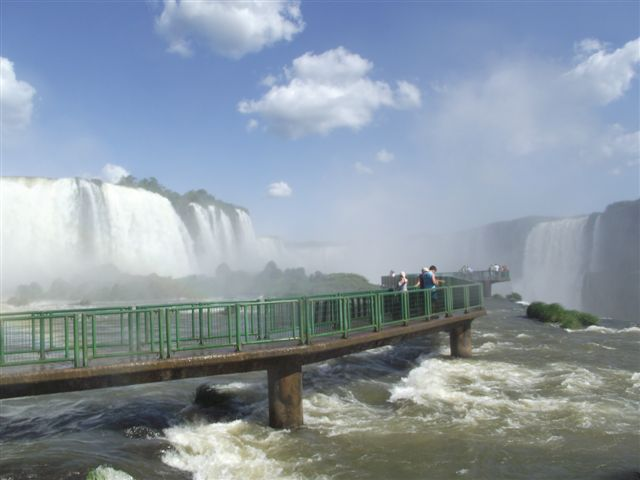

Cataratas do Iguaçu:

E é por isso mesmo que este destino não pode faltar em seu roteiro por Foz do Iguaçu, no Paraná. Afinal, não foi à toa que ele entrou como uma das Sete Novas Maravilhas Naturais do Mundo em 2012. Este é o maior conjunto de quedas d’água do mundo! Em comparação a ele, estão apenas as Cataratas do Niágara, na fronteira entre os Estados Unidos e o Canadá, e as Cataratas Victória, na fronteira entre a Zâmbia e o Zimbábue.
Machu-Picchu:

Machu-Picchu é o berço da cultura Inca. A magia conduzirá a viagem Machu Picchu, um dos destinos mais buscados da América do Sul, considerado uma das 7 maravilhas do mundo. Contemple o nascer do dia pelas janelas do Templo do Sol e conheça o Templo do Condor, escultura 3D que representa a ave, sagrada pela cultura inca.
Teatro Solis:

Um dos principais pontos turísticos em Montevidéu é o Teatro Solís, localizado logo ao lado da Plaza Independencia. O magnífico teatro foi inaugurado em agosto de 1856, com a Ópera de Verdi Ernani, e recebeu o seu nome em homenagem ao navegante português Juan Días de Solís, que descobriu o Rio da Prata.
Vulcão Villarrica:

Um dos principais atrativos da região, o Vulcão Villarrica, está localizado no Parque Nacional Villarrica e é um dos vulcões mais ativos da América do Sul. O principal atrativo do parque Villarrica é realmente a subida até o vulcão, tour que requer mais que condicionamento físico, requer também sorte e paciência. O tour não é realizado se o clima está ruim, se venta muito ou se o vulcão tiver atividade vulcânica superiores aos recomendados.
Embalse el Yeso:

Atração muito buscada por brasileiros em visita ao Chile, a instagramável Embalse el Yeso ficará fechada ao público pelo menos até outubro, informou o Serviço Nacional de Turismo (Sernatur) do Chile. O gerente de Turismo do município de San José de Maipo, Adrián Tapia, explica que, desde 2018, o acesso para Embalse el Yeso costuma ser interrompido no fim de abril devido à instabilidade do terreno provocado por fatores climáticos. "A reabertura depende das condições, mas normalmente ocorre no fim de setembro. Por conta de nevascas tardias, em 2021 o acesso só pôde ser reaberto em meados de novembro."
Localizado na região de Cajón del Maipo, a cerca de 100 quilômetros de Santiago, Embalse el Yeso é o principal reservatório de água potável da área metropolitana da capital e acabou involuntariamente ganhando status de atração turística.